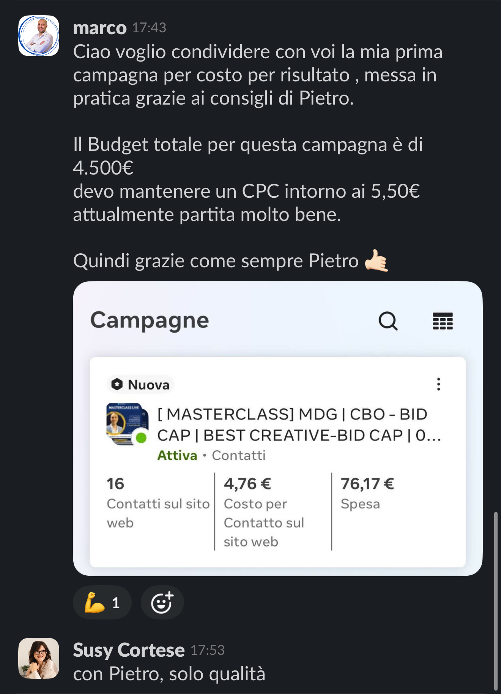
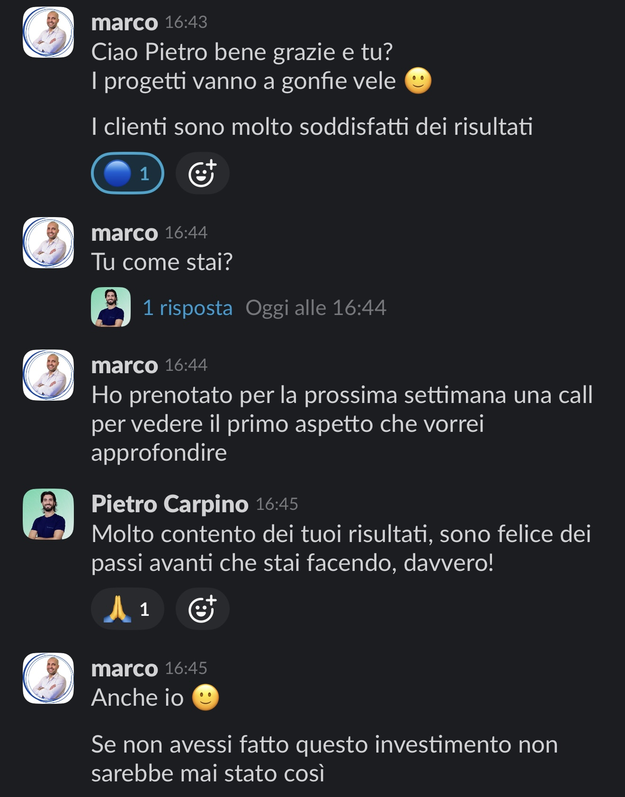
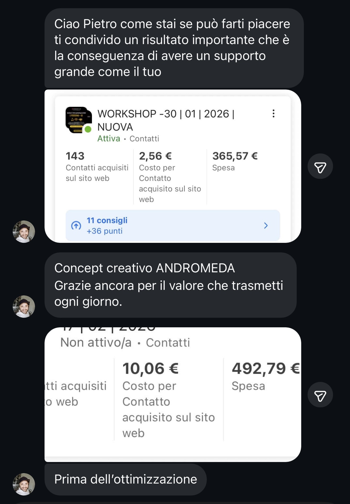

Nelle prossime ore ti arriverà su WhatsApp la Parte 2 della diagnosi, con le azioni specifiche da fare per superare il tuo blocco.
Video in arrivo — inserisci il link YouTube/Vimeo
Una sessione focalizzata sul tuo processo creativo attuale — zero impegno.

143 contatti acquisiti con soli €365 di spesa. Il prima e il dopo sono nello screen qui sotto.



Abbiamo mappato come venivano prodotte e testate le creatività. Il problema era che si testava tutto insieme senza isolare le variabili: angolo, formato, hook, CTA.
Abbiamo introdotto un sistema di testing per variabili isolate: un angolo alla volta, un formato alla volta. Ogni test produce un dato azionabile, non solo un risultato.
Abbiamo strutturato un calendario mensile di produzione: 4-6 angoli nuovi al mese, 2-3 varianti per angolo. Un ritmo sostenibile che alimenta l'algoritmo senza bruciare il team.